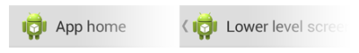
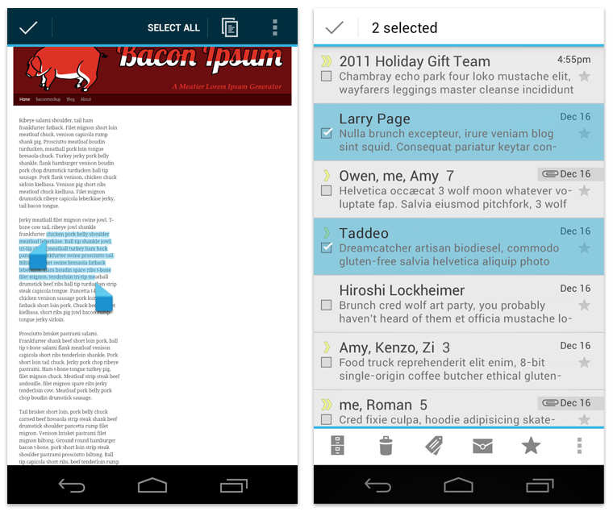

The action bar is arguably the most important structural element of an Android app. It's a dedicated piece of real estate at the top of each screen that is generally persistent throughout the app.
The main purpose of the action bar is to:
- Make important actions (such as New or Search, etc) prominent and accessible in a predictable way.
- Support consistent navigation and view switching within apps.
- Reduce clutter by providing an action overflow for rarely used actions.
- Provide a dedicated space for giving your app an identity.
If you're new to writing Android apps, note that the action bar is one of the most important design elements you can implement. Following the guidelines described here will go a long way toward making your app's interface consistent with the core Android apps.
General Organization
The action bar is split into four different functional areas that apply to most apps.

App icon
The app icon establishes your app's identity. It can be replaced with a different logo or branding if you wish. Important: If the app is currently not displaying the top-level screen, be sure to display the Up caret to the left of the app icon, so the user can navigate up the hierarchy. For more discussion of Up navigation, see the Navigation pattern.
App icon with and without "up" affordance.
View control
If your app displays data in different views, this segment of the action bar allows users to switch views. Examples of view-switching controls are drop-down menus or tab controls.
If your app doesn't support different views, you can also use this space to display non-interactive content, such as an app title or longer branding information.
Action buttons
Show the most important actions of your app in the actions section. Actions that don't fit in the action bar are moved automatically to the action overflow.
Action overflow
Move less often used actions to the action overflow.
Adapting to Rotation and Different Screen Sizes
One of the most important UI issues to consider when creating an app is how to adjust to screen rotation on different screen sizes.
You can adapt to such changes by using split action bars, which allow you to distribute action bar content across multiple bars located below the main action bar or at the bottom of the screen.

Layout Considerations for Split Action Bars
When splitting up content across multiple action bars, you generally have three possible locations for action bar content:
- Main action bar
- Top bar
- Bottom bar
If the user can navigate up the hierarchy from a given screen, the main action bar contains the up caret, at a minimum.
To allow the user to quickly switch between the views your app provides, use tabs or a spinner in the top bar.
To display actions and, if necessary, the action overflow, use the bottom bar.

Contextual Action Bars
A contextual action bar (CAB) is a temporary action bar that overlays the app's action bar for the duration of a particular sub-task. CABs are most typically used for tasks that involve acting on selected data or text.
The selection CAB appears after a long press on a selectable data item triggers selection mode.
From here the user can:
- Select additional elements by touching them.
- Trigger an action from the CAB that applies to all selected data items. The CAB then automatically dismisses itself.
- Dismiss the CAB via the navigation bar's Back button or the CAB's checkmark button. This removes the CAB along with all selection highlights.
Use CABs whenever you allow the user to select data via long press. You can control the action content of a CAB in order to insert the actions you would like the user to be able to perform.
For more information, refer to the "Selection" pattern.
Action Bar Elements
Tabs
Tabs display app views concurrently and make it easy to explore and switch between them. Use tabs if you expect your users to switch views frequently.

There are two types of tabs: fixed and scrollable.
Scrollable tabs
Scrollable tabs always take up the entire width of the bar, with the currently active view item in the center, and therefore need to live in a dedicated bar. Scrollable tabs can themselves be scrolled horizontally to bring more tabs into view.
Use scrollable tabs if you have a large number of views or if you're unsure how many views will be displayed because your app inserts views dynamically (for example, open chats in a messaging app that the user can navigate between). Scrollable tabs should always allow the user to navigate between the views by swiping left or right on the content area as well as swiping the tabs themselves.
Fixed tabs
Fixed tabs are always visible on the screen, and can't be moved out of the way like scrollable tabs. Fixed tabs in the main action bar can move to the top bar when the screen orientation changes.
Spinners
A spinner is a drop-down menu that allows users to switch between views of your app.
Use spinners rather than tabs in the main action bar if:
- You don't want to give up the vertical screen real estate for a dedicated tab bar.
- You expect your app's users to switch views infrequently.
Action buttons
Action buttons on the action bar surface your app's most important activities. Think about which buttons will get used most often, and order them accordingly. Depending on available screen real estate, the system shows your most important actions as action buttons and moves the rest to the action overflow.
For guidance on prioritizing actions, use the FIT scheme.
F — Frequent
- Will people use this action at least 7 out of 10 times they visit the screen?
- Will they typically use it several times in a row?
- Would taking an extra step every time truly be burdensome?
I — Important
- Do you want everyone to discover this action because it's especially cool or a selling point?
- Is it something that needs to be effortless in the rare cases it's needed?
T — Typical
- Is it typically presented as a first-class action in similar apps?
- Given the context, would people be surprised if it were buried in the action overflow?
If either F, I, or T apply, then it's appropriate for the action bar. Otherwise, it belongs in the action overflow.
Pre-defined glyphs should be used for certain common actions such as "refresh" and "share." The download link below provides a package with icons that are scaled for various screen densities and are suitable for use with the Holo Light and Holo Dark themes. The package also includes unstyled icons that you can modify to match your theme, in addition to Adobe® Illustrator® source files for further customization.
Download the Action Bar Icon Pack
Action overflow
The action overflow in the action bar provides access to your app's less frequently used actions. The overflow icon only appears on phones that have no menu hardware keys. Phones with menu keys display the action overflow when the user presses the key.
How many actions will fit in the main action bar? Action bar capacity is controlled by the following rules:
- Action buttons in the main action bar may not occupy more than 50% of the bar's width. Action buttons on bottom action bars can use the entire width.
- The screen width in density-independent pixels
(dp)
determine the number of items that will fit in the main action bar:
- smaller than 360 dp = 2 icons
- 360-499 dp = 3 icons
- 500-599 dp = 4 icons
- 600 dp and larger = 5 icons
Sharing data
Whenever your app permits sharing of data, such as images or movie clips, use a share action provider in your action bar. The share action provider is designed to speed up sharing by displaying the most recently used sharing service next to a spinner button that contains other sharing options.

Action Bar Checklist
When planning your split action bars, ask yourself questions like these:
How important is view navigation to the task?
If view navigation is very important to your app, use tabs (for fastest view-switching) or spinners.
Which of the app's actions need to be consistently available directly from the action bar, and which can be moved to the action overflow?
Use the FIT scheme to decide if actions are displayed at the top-level or can be moved to the action overflow. If the number of top-level actions exceeds the capacity of the main action bar, display them separately in a bottom action bar.
What else is important enough to warrant continuous display?
Sometimes it is important to display contextual information for your app that's always visible. Examples are the number of unread messages in a messaging inbox view or the Now Playing information in a music player. Carefully plan which important information you would like to display and structure your action bars accordingly.